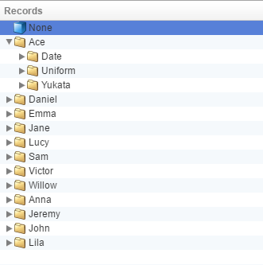

Database
The Database is where the majority of your game's data will be stored.
Collections
 Characters
Characters
This stores all the characters for the game. For more information, check theCharacterspage.
 Character Expressions
Character Expressions
This stores all the character expressions for the game. For more information, check theCharacter Expressionspage.
CG Gallery
This is where you set the CG (Cutscene Graphics) for the game. For more information, check theCG Gallerypage.
Animations
This is where you can set up animations for the game. For more information, check theAnimationspage.
Common Events
This is where you can set up commonly used scene contents to call at any scene. For more information, check theCommon Eventspage.
 System
System
This is where you can set up resolution, starting points, etc. for the game. For more information, check theSystemspage.
Records
Records is the contents of the Database Collections. Each of them has at least one which cannot be deleted.
By pressing Right Click you will be able to open the Context Menu.

 New Record
New Record
Creates a new record.
 New Folder
New Folder
Creates a New Folder.
Clear
Clears the contents of a Record. It does not work with folders.